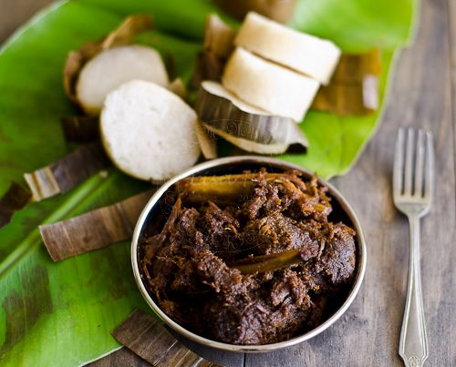

Malaysian Beef Rendang

An Original Malaysian Beef Rendang recipe by Trevor Hobson
Description
This recipe consist of a Cubed Beef Rendang
This recipe took a Total Time of 2 Hours and yield a Total of 6 Servings
Ingredients
- 3 cloves Garlic
- 15 dried Red Chile Pepper
- 5 slices Fresh Ginger Roots
- 2 tsp Coriander, Fennel, Nutmeg, and Cumin Seeds
- 1 tbsp Vegetable Oil
- 1 1/4 pound Beef Stew Meat, cut into 1 inch cubes
- 2 cups Shredded Coconut
- 1 2/3 cups Coconut Milk
Steps
- Heat the coconut in a dry wok, stirring continuously until golden brown. Set aside to cool.
- Using a blender or a food processor, blend the garlic, chilies, and ginger to a thick paste.
- Grind the coriander, fennel, nutmeg, and cumin.
- Using the wok, fry the garlic paste in a little oil for a few minutes.
Add the ground coriander, fennel, nutmeg and cumin;
cook for 3 to 4 minutes, stirring continuously.
Add beef; cook over a medium heat for a further 3 to 4 minutes, or until meat is browned.
- Stir in sugar, coconut, cloves, coconut milk, and water. Bring to a boil, lower heat,
and simmer until most of the liquid has gone and the meat is tender (about 1 hour).
Season with salt to taste.